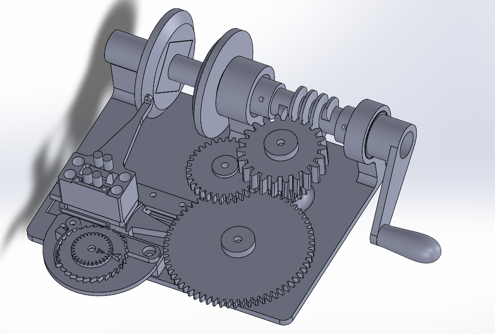

March 2026
For a project course in my third year of electrical engineering at UBC, we had to build a robot that required a lot of solenoids. Our solenoid was built using mild steel box section and rods, around a 3D printed armature. It requires quite a lot of turns of magnet wire, which can be annoying to wind by hand.
To solve the issue of needing to spend 5 hours winding solenoids, I instead opted to spend 20 hours designing and building a coil winding machine.

This was designed in Solidworks and printed on a Bambu P1S, assuming tight-ish tolerances (0.2mm for moving parts). You may need to change the gear ratio depending on your wire gauge. In this case it was meant for 30 AWG enamelled copper wire. You are supposed to turn the crank clockwise when looking from the side it is attached to.
Some features:
If you want to make one for yourself, here are the design files (Solidworks). Note there are some dead files in there, so just open the assembly and see which ones are actually in use. Don't print the models of the bearings, they are just models.
Parts you will need:
I am sure you can figure out how to assemble it. Just open the solidworks assembly if you want to see how it fits together.
If you want to just drag a bunch of stuff into your slicer and click print, then here are all the STL files. Note that this has repeats of all the parts, so you can directly drag everything in and it should print in the right quantities.